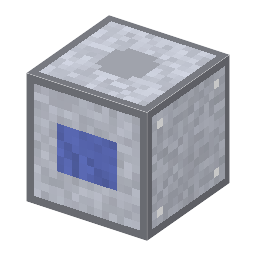

説明
①子ども 液体空気からほんの少しだけ入っているネオン・クリプトン・キセノンを取り出す塔。
②学生 空気分離装置＋鋼×4＋銅×2。電気 2kW・5秒。酸素1袋＋窒素1袋ずつ使い、クリプトンは32回・ネオンは16回・キセノンは250回でやっと1袋。
③大人 1898年、ラムゼーとトラヴァースは液体空気をゆっくり蒸発させて、ネオン（新しい）・クリプトン（隠れた）・キセノン（よそ者）を次々に見つけた。
④ガチ 空気の中にネオンは 18ppm、クリプトンは 1.1ppm、キセノンは 0.09ppm しかない。沸点の高いクリプトン・キセノンは液体酸素の底に、低いネオンは窒素の上に集まるので、空気分離装置の副産物として取る。
作り方
使い道
（このアイテムを使うレシピは無い）